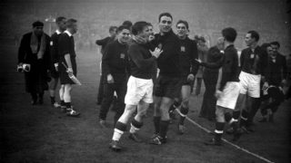
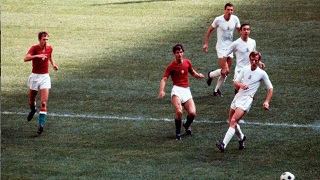

A kezdetektől a csúcsig
Magyar futballról 1875-től beszélhetünk, de akkor még csak kísérleteztek a labdarúgással itthon, de világszerte is. Az első válogatott-mérkőzést 1902. október 12-én játszottuk (Ausztria-Magyarország 5:0) , viszont az első nemzetközi sikerre tíz évet kellett várnunk, hiszen 1912 nyarán sikerült kvalifikálni magunkat először olimpiára, ahol vigaszdíjat szerzett a magyar csapat. Elindult valami a magyar futballban, évről-évre egyre lépkedett felfelé a labdarúgás ranglétráján, 1934-ben az olaszországi világbajnokságon hatodikak lettünk, majd négy évvel később a franciaországi világbajnokságon ezüstérmet szereztünk, mellyel már csúcsközeli állapotba kerültünk. De az igazi mámor csak húsz évvel ezután következett, amikor a magyar válogatott először 1952-ben olimpiai aranyérmet ünnepelhetett, majd 1954-ben újra világbajnoki ezüstérmet szerzett.
Hová tűnt a magyar futball?
Még néhány évig Európa topcsapatai közé tartoztunk, a '60-as években még rendszeresen részt vettünk a nemzetközi eseményeken (1960- olimpiai bronzérem, 1962- vb-negyeddöntő, 1964- Eb-elődöntő , 1964- olimpiai aranyérem, 1966- vb-negyeddöntő, 1968- olimpiai aranyérem)
Egyetlen Aranylabdásunk Albert Flórián, aki 1967-ben nyerte el a legnagyobb elismerést jelentő díjat.
Majd következtek a '70-es évek, amikor még 1972-ben nyertünk egy olimpiai ezüstérmet, illetve játszottunk egy Eb-elődöntőt, de azután a magyar futball fokozatosan veszítette el az addig bérelt helyét a világ futballtérképén.
A változás éve
2014-ben úgy döntött az MLSZ, hogy ennek véget kell vetni, így lecsökkentették az NB1 létszámát 16-ról 12 csapatra, és pénzügyi támogatásokat vezettek be, amelyek a magyar fiatalok bevetését honorálták, így a 2015/16-os szezonban már csak 105 külföldi állampolgár lépett pályára a legfelsőbb osztályban.
Ekkor elindult valamiféle szervezettség a magyar labdarúgásban, amely az elmúlt évtizedekben hiányzott. A 2016/17-es szezonban már csak 83 légióst alkalmaztak a csapatok, így az MLSZ mondhatjuk, hogy elérte a célját, hiszen egyre több lehetőséget kapnak a magyar fiatalok. A szövetség ráeszmélt, hogy a sikeres futballhoz kell egy profi szabályrendszer, illetve egy tudatos szervezeti koncepció. Kinevezték Bernd Strockot sportigazgatónak, aki megpróbálta meghonosítani a német futballkultúrát.
Közben Pintér Attila megbukott a válogatott vezetőedzőjeként, majd Dárdai Pált nevezte ki a szövetség, amely elindított egy hatalmas lavinát. A magyar futballtársadalom ráeszmélt, hogy ugyan szembeköpték őket, mégis vannak jó edzőink, csak a legújabb edzőgeneráció között kell szétnézni. Dárdai sajnos nem maradhatott, a Hertha nem engedte, így Bernd Storckot ajánlotta be a szövetségnél, hogy vegye át a helyét, aki véghezvitte a várva várt futballcsodát: kivezette a magyar csapatot az Eb-re.